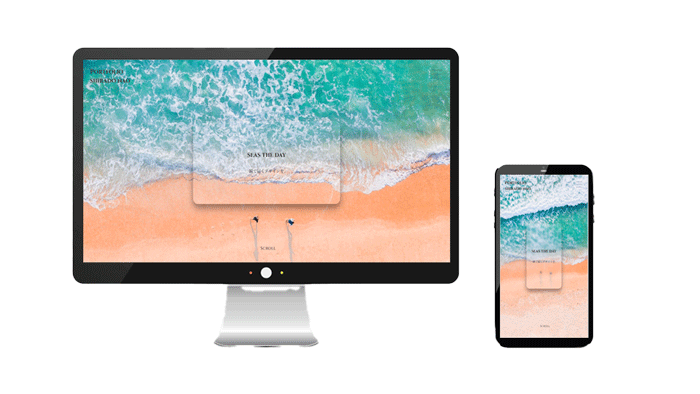

view site
このポートフォリオ
- 制作経緯
- 職業訓練校で学んだことをアピールするために制作。
- コンセプト
ターゲット
- 自分をシンプルかつ大胆にアピールする。
ターゲット：web制作会社
- 担当部分
- すべて担当。
写真はフリー素材を使用。
- 制作時間
- デザインカンプ：8時間
コーディング：30時間
- 制作ツール
- デザインカンプ：Figma
イラスト：illustrator
画像加工：photoshop
サイト：HTML/CSS/JavaScript/VSCode
- コメント
-
このポートフォリオは常にアップデートしてくいくことを考え、更新がしやすいようにシンプルなレイアウトにしました。
サイトデザインの手順は私の好きな言葉を先において、次にその言葉にあう写真を選び、全体の構成
を考えました。
余白を考え、線を繊細にすることを意識しました。
フォントは主張しすぎないが、デザイン性があるCinzelを使用しました。
メインカラーは、アクセントカラーの
オレンジとなじむ#444でこげ茶にしました。
あえて白ボタンつくり、cssで立体にして押せるのかな？と興味をもってもらうようにしました。
ゼロからのスタートでデザインのかけらも知らなかったのですが、職業訓練校でたくさん学ばせていただきました。知れば知るほど面白さもありハードで大変でした。この先もどんどん進化していくこの業界が楽しみで仕方ありません。